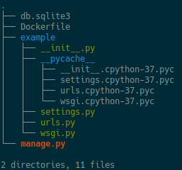
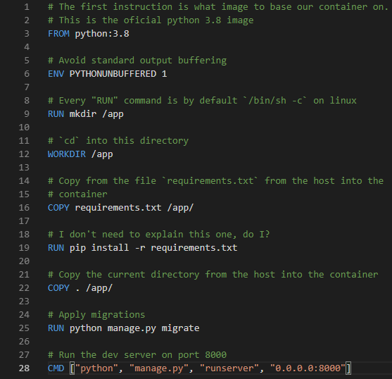
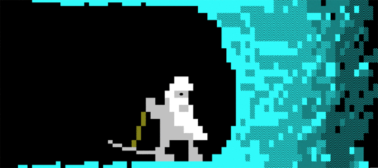
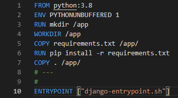

Docker + Python: How To Get There?
About me
What is Docker?
It’s nothing more than an isolated process
What does this mean?
- No CPU emulation
- No Hypervisor
- It’s just a process managed by the Docker service
Why Docker?
- Repeatability
- Portability
- Reusability
- Many more
An example use case

We use Python…
…and a native C library
which we need to configure, compile and install…
For both MacOS and Linux
Example Dockerfile fragment
wget -O libpostal.tar.gz \
https://github.com/openvenues/libpostal/archive/v1.1-alpha.tar.gz && \
tar -xzvf libpostal.tar.gz && \
rm -f libpostal.tar.gz && \
./bootstrap.sh && \
./configure --datadir=/usr/share/ && \
make -j4 && \
make install && \
cd .. && \
rm -fr libpostal-1.1-alpha && \
ldconfigThis means mantaining at least two target platforms
What are our options?
We tried the PEX route…
It didn’t work out for us…
- Portability
- Usability
- Fidelity
- No more “but it works on my machine!”
Let’s look at a more typical scenario
A Django app

Let’s dockerize it


Production ready Dockerfile
